系统概要设计方案
1． 引言
1.1编写目的
此概要设计说明书是为了说明整个系统的体系架构，以及需求用例的各个功能点在架构中的体现，为系统的详细设计人员进行详细设计时的输入参考文档。
1.2背景
软件系统的名称：流域可持续性发展的决策支持系统；
开发工具：java
开发者：
1.3定义
1.4参考资料
《需求分析说明书》
《数据库设计说明书》
2．总体设计
2.1简述
系统采用流行的B/S结构模式。系统的分析设计采用面向对象的技术。
2.2架构设计
2.2.1系统逻辑架构图
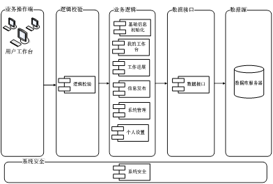
2.2.2系统物理架构图
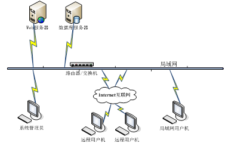
2.2.3顶层系统包图
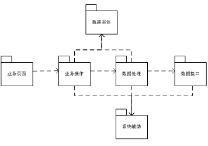
类包说明：
n 业务页面：用户动态网页，主要是jsp文件。
n 业务操作：主要控制业务访问的接口和业务流转。
n 数据处理：提供业务的实现，包括对业务数据的增、删、改、查等操作。
n 数据实体：业务对象的实体类。
n 数据接口：提供数据库的访问，传递数据或返回相应数据。
n 系统辅助：提供了供整个系统辅助的功能。
2.2.4 业务类包图
2.2.5子系统关系图
2.3接口设计
2.3.1界面框架设计
2.3.2外部接口设计
3．子系统设计
3.1登录子系统
3.1.1子系统说明
角色管理：定义角色和系统权限之间的对应关系，方便用户权限的分配控制。
3.1.2类图
3.1.2.1角色、权限
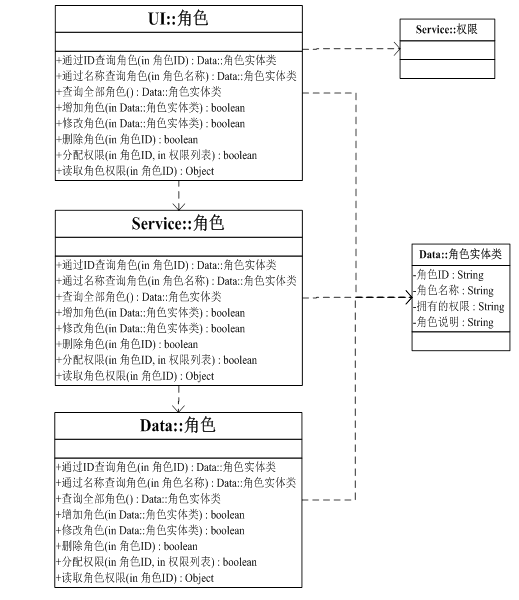
3.1.3类说明
3.1.3.1角色、权限
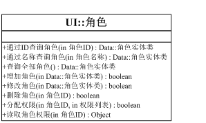
通过ID查询角色：页面得到角色ID，调用Service::角色的通过ID查询角色方法,得到指定角色的实体数据。
通过名称查询角色：页面得到角色名称，调用Service::角色的通过名称查询角色方法,得到指定角色的实体数据。
查询全部角色：调用Service::角色的查询全部角色方法,得到全部角色的实体数据。
增加角色：在页面上得到角色的实体数据，调用Service::角色的增加角色方法，实现角色的添加。
修改角色：在页面上得到修改后的角色实体数据，调用Service::角色的修改角色方法，实现角色的修改。
删除角色：调用Service::删除角色方法，将指定角色的数据置为已删除状态。
分配权限：调用Service::分配权限方法，给指定角色分配权限。
读取角色权限：调用Service::读取角色权限方法，读取指定角色的权限数据。
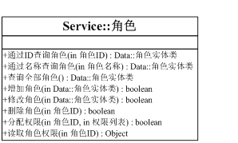
通过ID查询角色：调用Data::角色的通过ID查询角色方法,得到指定角色的实体数据。
通过名称查询角色：调用Data::角色的通过名称查询角色方法,得到指定角色的实体数据。
查询全部角色：调用Data::角色的查询全部角色方法,得到全部角色的实体数据。
增加角色：调用Data::角色的增加角色方法，实现角色的添加。
修改角色：调用Data::角色的修改角色方法，实现角色的修改。
删除角色：调用Data::删除角色方法，将指定角色的数据置为已删除状态。
分配权限：调用Data::分配权限方法，给指定角色分配权限。
读取角色权限：调用Data::读取角色权限方法，读取指定角色的权限数据。
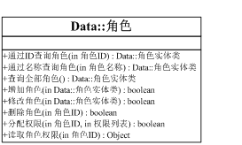
通过ID查询角色：得到指定角色的实体数据。
通过名称查询角色：得到指定角色的实体数据。
查询全部角色：调用Data::角色的查询全部角色方法,得到全部角色的实体数据。
增加角色：实现角色的添加。
修改角色：实现角色的修改。
删除角色：将指定角色的数据置为已删除状态。
分配权限：给指定角色分配权限。
读取角色权限：读取指定角色的权限数据。
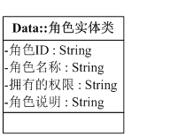
角色实体类数据。
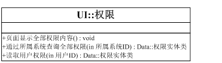
页面显示全部权限内容：调用Service::权限的查询全部权限或通过所属系统查询全部权限，将权限数据显示到页面上。
通过所属系统查询全部权限：调用Service::权限的通过所属系统查询全部权限，读取某系统下的全部权限数据。
读取用户权限：调用Service::权限的读取用户权限，读取指定用户的权限数据。
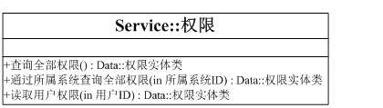
查询全部权限：调用Data::权限的查询全部权限，读取全部的权限数据。
通过所属系统查询全部权限：调用Data::权限的通过所属系统查询全部权限，读取某系统下的全部权限数据。
读取用户权限：调用Data::权限的读取用户权限，，读取指定用户的权限数据。
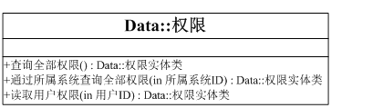
查询全部权限：读取全部权限数据，返回全部的权限实体类数据。
通过所属系统查询全部权限：读取所属系统权限数据，返回某系统下的全部权限实体类数据。
读取用户权限：读取指定用户的权限数据。
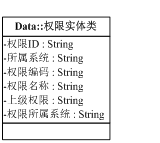
权限实体类数据。
3.1.4界面设计
3.1.4.1角色管理页面
3.2流域展示子系统
3.2.1子系统说明
本系统只可浏览信息，不可编辑任何信息
3.2.2类图
3.2.3类说明
3.2.4界面设计
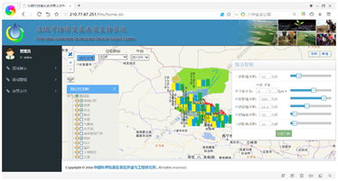
3.3流域管理子系统
3.3.1子系统说明
本系统实现了增加，删除，查询，修改流域的功能。
3.3.2类图
3.3.2.1增加流域
3.3.2.2.删除流域
3.3.2.3查询流域
3.3.2.4修改流域
3.3.3类说明
3.3.4界面设计
3.3.4.1增加流域
3.3.4.2删除流域
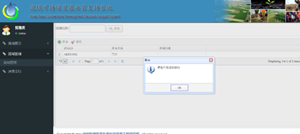
3.3.4.3查询流域
3.3.4.4修改流域
3.4决策支持子系统
3.4.1子系统说明
本系统包括两个模块，项目管理模块和可持续性评价模块。项目模块实现了增加，删除，查询，修改，评价功能，而在评价功能中有包括了目标体系设置的功能，在目标体系设置功能中又包括了情景设置功能。
3.4.2类图
3.4.3类说明
3.4.4界面设计
3.4.4.1增加项目
3.4.4.2删除项目
3.4.4.3查询项目
3.4.4.4修改项目
3.4.4.5评价项目
3.4.4.5.1项目体系设置
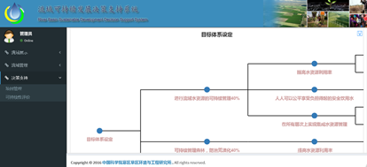
3.4.4.4.5.1.1情景设置
3.4.4.6可持续性评价
4.约束和假定
描述系统设计中最主要的约束，这些是由客户强制要求并在需求说明书写明的。说明系统是如何来适应这些约束的。
另外如果本系统跟其它外部系统交互或者依赖其它外部系统提供一些功能辅助，那么系统可能还受到其它的约束。这种情况下，要求清楚地描述与本系统有交互的软件类型（比如某某某数据库软件，某某某EMail软件）以及这样导致的约束（比如只允许纯文本的Email）。
实现的语言和平台也会对系统有约束，同样在此予以说明。
对于因选择具体的设计实现而导致对系统的约束，简要地描述你的想法思路，经过怎么样的权衡，为什么要采取这样的设计等等。
包括运行环境的约束，简要地说明对本系统的运行环境（包括硬件环境和支持环境）的规定。
5.系统数据结构设计
5.1逻辑结构设计
注：表和表字段命名规范：
1.
表名的定义：
规范格式：系统名_表名（字母全部大写）
比如，工作计划管理系统中的某个表定义为：WORKPLAN_TASK;
2.
表字段的定义：
规范格式：表名+字段名称（首字母大写），以避免字段重名出现在不同表中。
比如，表WORKPLAN_TASK中的字段标识Id定义为：TaskId；
3.
表字段长度的定义：
规范格式：长度一般为8的整数倍；
比如，VARCHAR的长度可为8或16或24或32或64等；
4.
表字段类型为日期型的定义：
规范格式：一般日期型的字段设为VARCHAR，且长度一般为24（已精确到毫秒）
5.
公共表名的定义：
规范格式：PUBLIC_表名（字母全部大写）
比如，各个子系统都会用到的公共表，如角色或操作日志表可定义为：PUBLIC_ROLE，PUBLIC_OPERATELOG;
5.2物理结构设计
给出本系统内所使用的每个数据结构中的每个数据项的存储要求，访问方法、存取单位、存取的物理关系（索引、设备、存储区域）、设计考虑和保密条件。
5.3数据结构与程序的关系
说明各个数据结构与访问这些数据结构的形式:
6系统出错处理设计
6.1出错信息
用一览表的方式说朗每种可能的出错或故障情况出现时，系统输出信息的形式、含意及处理方法。
6.2补救措施
说明故障出现后可能采取的变通措施，包括：
a. 后备技术说明准备采用的后备技术，当原始系统数据万一丢失时启用的副本的建立和启动的技术，例如周期性地把磁盘信息记录到磁带上去就是对于磁盘媒体的一种后备技术；
b. 降效技术说明准备采用的后备技术，使用另一个效率稍低的系统或方法来求得所需结果的某些部分，例如一个自动系统的降效技术可以是手工操作和数据的人工记录；
c. 恢复及再启动技术说明将使用的恢复再启动技术，使软件从故障点恢复执行或使软件从头开始重新运行的方法。
6.3系统维护设计
说明为了系统维护的方便而在程序内部设计中作出的安排，包括在程序中专门安排用于系统的检查与维护的检测点和专用模块。 各个程序之间的对应关系，可采用如下的矩阵图的形式；